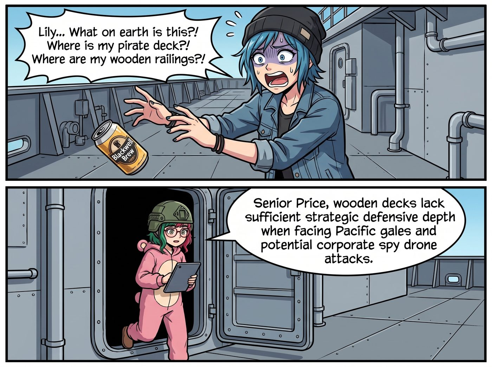

海盜旗下的前進基地

這一切的開端，源自於 Chloe Price 那張比華爾街分析師還會畫餅的嘴。
自從搬到新基地後，Chloe 和 Max 親手用廢舊木材與角鋼，在懸崖邊一磚一瓦地重建了她們十三歲那年未完成的海盜瞭望塔。那座塔承載了太多——那個暴風雨夜的崩潰與和解、無數個並肩喝著啤酒看星星的深夜。只是當初一切從簡，塔身多半是用邊角料湊出來的，木板拼接處還帶著粗糙的鋸痕，欄杆歪歪扭扭，連一個像樣的船舵都沒有。
為了合法動用她剛考到的那張A級特種銲接執照，並搞到一台退役的軍規級液壓機械臂與自動等離子切割機，Chloe 把 Victoria 忽悠得團團轉。
「聽著，Victoria，這不是買工具，這是環境藝術基礎設施投資！」Chloe 叼著沒點燃的煙，指著車廂外那座簡陋的瞭望塔，「我們要把那座塔徹底升級！等西雅圖的那些富豪藏家來參觀時，讓他們站在太平洋的狂風中喝香檳，這叫沉浸式廢土奢華體驗！妳預付這十萬美金，下個月就能在財報上寫成百萬級的藝術地標！」
被沉浸式奢華蒙蔽了雙眼的資本名媛，腦波一弱，真的簽了支票。
但 Chloe 真正的計畫，根本不是什麼藝術地標。她只是想趁 Max 出門辦事的那幾天，把那座承載著兩人回憶、卻略顯粗糙簡陋的瞭望塔，徹底翻修升級——用真正的防腐木甲板取代那些邊角料，裝上一個像樣的木製船舵，掛上骷髏旗，再放一台裝滿啤酒的小冰箱和一架黃銅單筒望遠鏡。她想給 Max 一個驚喜，讓這座屬於她們的塔，從「將就湊合」變成「真正完整」的樣子。
然而，當這份翻修藍圖在審批流程中落入實習生 Lily 手裡時，事情開始朝著中東戰區的方向一路狂奔。
一、童年浪漫的合規性武裝
一週後。當 Max 滿懷期待地被 Chloe 蒙著眼睛帶到懸崖邊，準備看看那座她再熟悉不過的瞭望塔煥然一新的模樣時，Chloe 扯下眼罩，兩人同時陷入了漫長且絕望的死寂。
沒有升級版的木製甲板，沒有嶄新的黃銅望遠鏡，也沒有像樣的海盜船舵。取而代之的，是她們親手蓋起的那座熟悉塔身，此刻已經被拆得只剩下鋼骨架。
矗立在懸崖邊的，是一個通體採用啞光迷彩塗裝、由防爆鋼筋混凝土與模組化防彈裝甲板拼接而成的軍事級前進基地哨塔。塔頂沒有骷髏旗，只有一個正在三百六十度旋轉的軍用級相控陣雷達天線；四周沒有木欄杆，而是佈滿了通電的蛇腹型鐵絲網；原本應該放啤酒冰箱的地方，赫然架著一台散發著金屬冷光的長距離聲波武器。
「Lily……這是什麼鬼東西？！」Chloe 驚恐地倒退了兩步，手裡的啤酒罐掉在地上，「我的海盜甲板呢？！我的木頭欄杆呢？！」
「Price 學姐，木製甲板在面臨太平洋強風與潛在的企業間諜無人機襲擊時，缺乏足夠的戰略防禦縱深。」Lily 穿著粉色小熊睡衣，戴著一頂與她極不搭調的凱芙拉戰術頭盔，抱著平板電腦從防爆門後走了出來。
「我對您的藍圖進行了微調。」實習生推了推頭盔下的圓框眼鏡，語氣依然軟糯，卻聽得人頭皮發麻，「根據國防部的反恐與部隊防護建築標準，我將瞭望台升級成了符合北約規範的防禦哨所。頂部的熱成像雷達可以鎖定半徑五十公里內的任何未經授權的飛行器；那台聲波武器能在兩秒內讓試圖攀爬懸崖的入侵者暫時性失聰並喪失行動能力。」
Lily 溫柔地笑了笑：「現在，我們的核反應爐有了完美的制高點掩護。這是一次極具性價比的防禦升級呢。」
二、Max 的物理與精神雙重鎮壓
「微調？！妳管這叫微調？！」
Max 徹底崩潰了。她衝上前，看著那台足以在戰場上鎮壓暴動的聲波武器，發出了復古文青最絕望的哀嚎：「Lily！我們只是想玩海盜遊戲！我們只是想戴著眼罩在這裡看海鷗和夕陽！妳把它變成了戰地前線陣地！」
「但 Caulfield 學姐，如果有人派僱傭兵來搶奪我們的合規檔案……」Lily 眨著無辜的大眼睛，試圖從企業級威脅的角度進行辯護。
「沒有僱傭兵！」Max 爆發出了前所未有的敏捷。她一把奪過 Lily 手裡的平板電腦，然後像隻護崽的母雞一樣，死死按住實習生的肩膀。
「立刻！馬上！把那個會把人耳朵震聾的聲波武器給我拆下來！」Max 欲哭無淚地指著哨塔，「把鐵絲網換成麻繩！把防彈裝甲給我漆成木頭的顏色！如果我今天下午沒有看到一個木製的船舵出現在那裡，我就把妳的 Excel 軟體從電腦裡全部刪掉！！」
面對刪除 Excel 這種毀滅級的威脅，行政黑魔法師終於屈服了。
「好的，Max 學姐。我將啟動民用景觀降級協議。」Lily 委屈地低下頭，小聲嘀咕，「但我還是會保留底層的防爆鋼筋，以防萬一……」
就在這時，Victoria 穿著高跟鞋，端著咖啡從車廂裡走了出來，準備驗收自己的百萬級廢土藝術地標。當名媛看到那個迷彩防爆哨塔、旋轉的軍用雷達，以及滿地的鐵絲網時，手裡的咖啡杯「啪」的一聲掉在了地上。
「Chloe Price……妳用我的十萬美金，給我們建了一個軍事碉堡？！」Victoria 氣得渾身發抖。
「這不怪我！是這個小……」Chloe 話到嘴邊，原本想脫口而出「小怪物」，卻一低頭撞見 Lily 那雙已經開始泛紅、委屈巴巴的大眼睛，話鋒硬生生轉了個彎，「是這個小軍火商幹的！」她毫不猶豫地把鍋甩給了正在指揮自動機械臂拆除聲波武器的 Lily。
當天傍晚，經過 Max 的拼死抵抗與強制降級，哨塔終於勉強恢復了幾分海盜的氣息。防彈裝甲被 Chloe 噴上了木紋漆，崖邊裝上了一個巨大的復古木製船舵。Max 滿意地站在船舵前，戴上海盜眼罩，舉起黃銅望遠鏡看向波光粼粼的太平洋，終於找回了十三歲那年的浪漫。
三、不該問出口的那句話
海盜旗在崖邊迎風招展，散發著一種詭異的、連雷達都掃不到的平靜。
Victoria 手裡端著那杯已經冷掉的拿鐵，視線從那面隱身海盜旗緩緩移到被拆卸在一旁的聲波武器上。身為財團繼承人的商業直覺，讓她犯下了一個致命的錯誤——她沒忍住自己的好奇心。
「Lily，我只是純粹從供應鏈與資產採購的角度問一句。」Victoria 微微皺著眉頭，「像這種軍用相控陣雷達，還有這面能讓預警機瞎掉的超穎材料……妳到底是怎麼透過合法物流搞到手的？」
話剛出口，Victoria 就看見 Lily 轉過了頭，那雙被圓框眼鏡放大的眼睛裡，瞬間爆發出了一種類似於連環殺手展示戰利品時的極度狂熱與純潔。
名媛的心底猛地一沉：該死，我不該問的。
「這其實是一個非常經典的 ESG 合規套利案例，Victoria 學姐。」Lily 軟糯的聲音像是一首優雅的安魂曲，「上個月，我在核對碳排放指標時，順手查閱了維吉尼亞州一家國防承包商的年度環保報告。他們聲稱生產線廢水處理達到零排放標準，並以此申請了高額聯邦綠色補貼。實際上，我發現他們把含重金屬的冷卻水直接排進了海灣。」
「所以妳敲詐了他們？」Max 咽了一口口水。
「請不要使用敲詐這種帶有主觀惡意的詞彙，Max 學姐。我們達成的是庭外慈善和解。」Lily 展示了一份帶有雙方數位簽章的協議，「他們為了表達對環境保護的深刻懺悔，自願向我們這個極端氣候弱勢群體庇護所進行了免稅的實物捐贈。那台聲波武器，在報關單上的品名是強效驅鳥器；這面雷達隱身布料，則被定義為實驗性抗輻射藝術防塵布。他們甚至指派了一架私人貨機，連夜把這些環保物資空投到了西雅圖郊外的私人機場。」
海風吹過，崖邊陷入了死一般的寂靜。
「我的老天……」Victoria 踉蹌著後退了一步，緊緊抱住自己的雙臂，「妳用幾張水文圖，就洗劫了一家國防承包商的軍械庫……Lily，妳老實告訴我，Chase 財團的 ESG 報告……妳沒看過吧？」
「請放心，Victoria 學姐。作為您的專屬經紀人，我對您的家族資產實行了預防性合規遮蔽。」Lily 乖巧地鞠了一個躬。
Victoria 虛弱地扶著額頭，無比後悔自己為什麼要多嘴問那一句。她發誓，以後就算看到 Lily 把一架戰鬥機停在車廂外面，她也絕對不會再問一個字。
這時，Kate 繫著小圍裙，端著一盤剛烤好的肉桂捲從車廂裡走了出來。
「大家快來吃點心吧！」小天使看著那面黑色的隱形海盜旗，滿眼都是讚嘆，「那位捐贈防塵布的好心人真是太體貼了，我們今晚一定要在禱告中好好感謝這家充滿愛心與社會責任感的公司呢！」
聽著大天使這番終極聖光解讀，Chloe 終於忍不住爆發出一陣喪心病狂的狂笑。而 Victoria 則默默地拿起一個肉桂捲塞進嘴裡，用甜食來安撫自己那顆受到嚴重資本驚嚇的脆弱心臟。